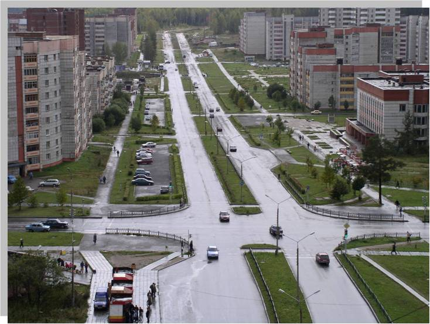

Улица Ленина
Буквально от самого забора, обозначающего границу между закрытым Лесным и Нижней Турой, берёт своё начало главная улица города – Ленина. Заканчивается она новостройками в лесном массиве возле одного из контрольно-пропускных пунктов. Улица Ленина, как главная улица города,- самая оживлённая, буквально запруженная легковым транспортом: в часы “пик” она напоминает улицу мегаполиса.